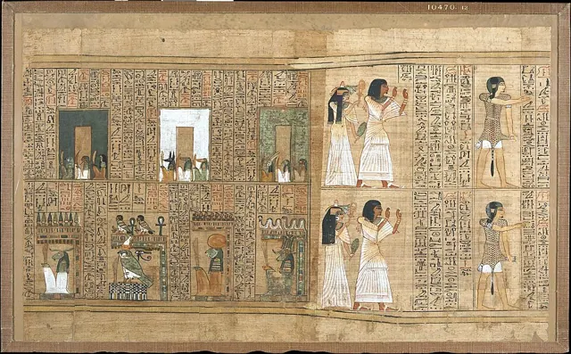
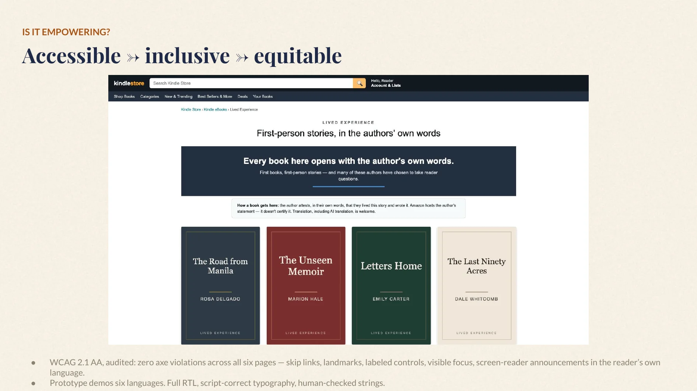
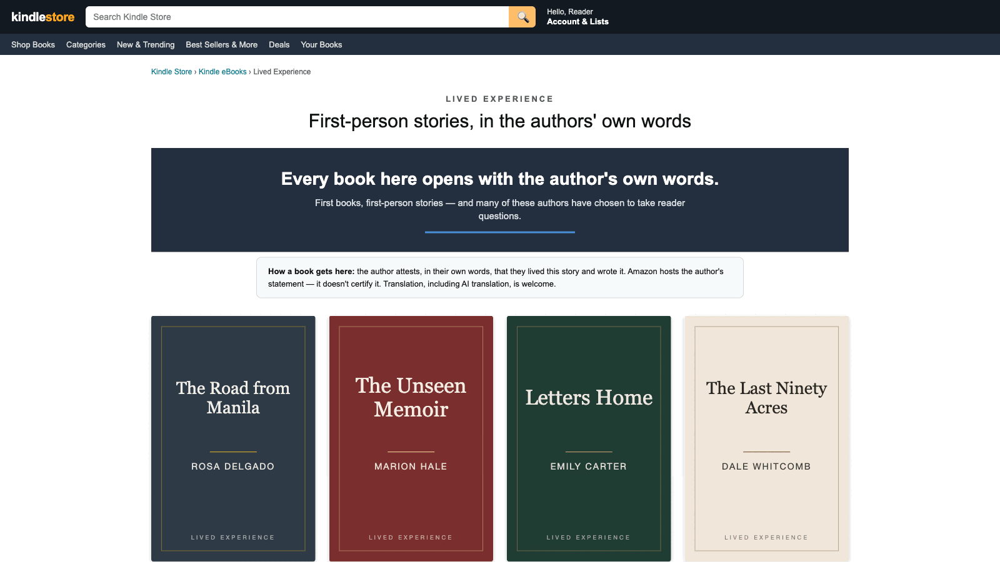
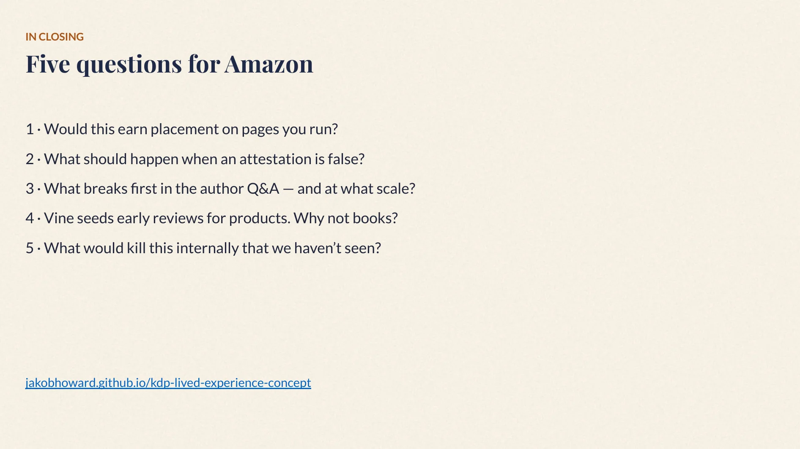

The shelf
Every card opens with the author’s own words — membership is attestation plus metadata, so it scales with no editorial headcount.
Ask 1 — would this earn placement?


Author attestation
The gate is the author’s own statement. No badge, no filter — no store can certify a life. Her name on her own words is the promise.
Ask 2 — what should happen when an attestation is false?

Finished the book? Ask the author
Rosa sees each question — answers it, or deletes it. Nothing appears anywhere unless she publishes it. No private messaging at any tier, by design.
Ask 3 — what breaks first at scale?

Nothing is public until Rosa publishes it
Answer, publish, or decline — declining deletes. She is never required to answer, and Amazon does not chase her.
The person who lived it, answering
Her answer publishes with the question to her author page — where every future reader can see the person behind the book. Goodreads proved the moderation model; our claim is placement, not novelty.


Forced to choose, 16 took the memoir — but 19 refused the choice.
Under 55, reaching the author reads as a reason: 12 of 23 rated it 4–5. Among 55+, 1 of 15.
The hesitation that beat everything: “no way to tell if it’s any good.”




